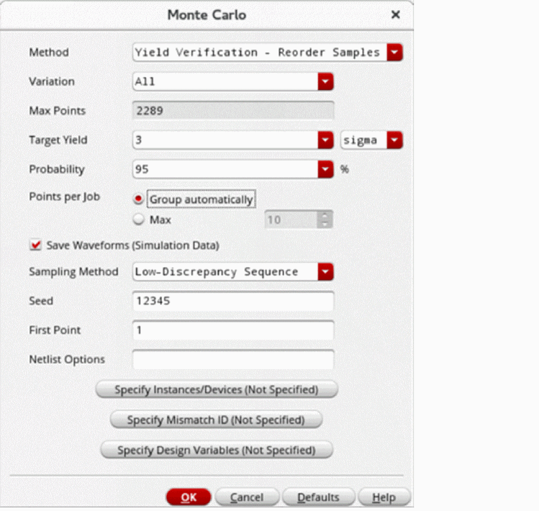
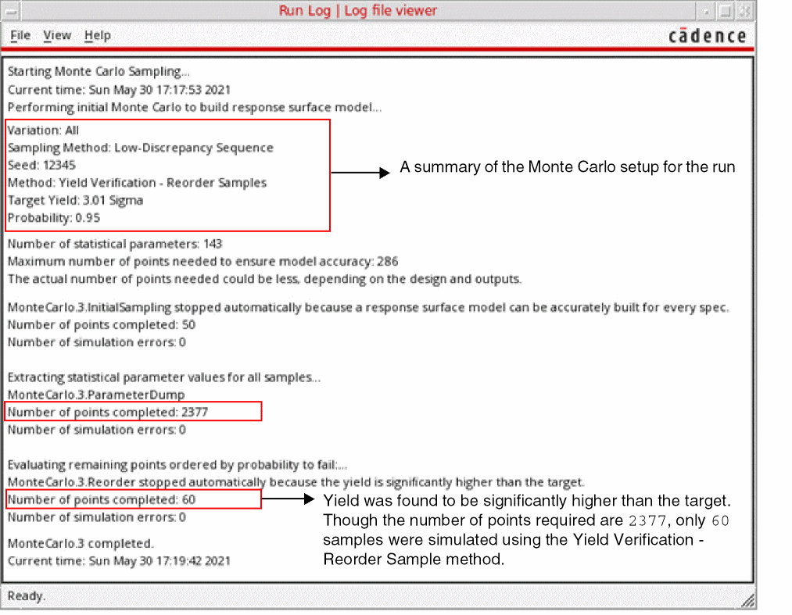
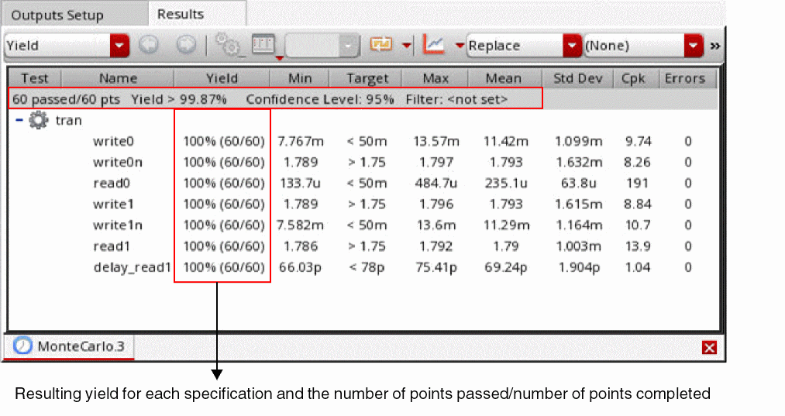

Running the Yield Verification - Reorder Sample Method
Before you run the Yield Verification -Reorder Sample method, ensure that the following environment variable is set to t:
envSetVal("maestro.monte" "showMethodYieldVerificationReorderSamples" 'boolean t)
To verify yield using the Yield Verification - Reorder Sample method:
- Open your design in ADE Assembler or ADE Explorer.
- From the Run Mode drop-down list, select Monte Carlo Sampling.
-
Click the Simulation Options command.
The Monte Carlo form opens.
 - From the Method drop-down list, select Yield Verification - Reorder Sample.
- From the Variation drop-down list, select Process, Mismatch, or All.
-
The Max Points field shows the maximum number of points that will be run.
This value depends on both the Target Yield and Probability. The number of simulations required is typically much smaller. - In the Target Yield field, specify the yield value that you want to achieve for your design. The target yield can be specified in either sigma or percentage
- In the Probability field, select a probability percentage value.
- Probability values closer to 100% will require more simulations before the yield estimate can be determined to be lower or higher than the target. Smaller probability values require less simulations before autostop is triggered. The default value is 95%.
- Select the Save Waveform (Simulation Data) check box to save the waveform data so that it can be used later for post-processing.
- From the Sampling Method drop-down list, select Random or Low-Discrepancy Sequence.
- Click OK to close the Monte Carlo form.
- Click Run Simulation to run the Yield Verification - Reorder Sample method.
The Run Log reports the following information.

The Yield view of the Results tab displays the results of the Monte Carlo run for the Yield Verification - Reorder Sample method.

Related Topics
Workflow of the Yield Verification - Reorder Samples Method
showMethodYieldVerificationReorderSamples
Return to top